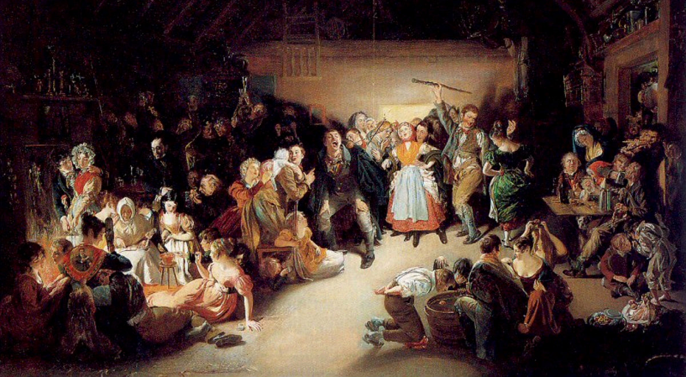
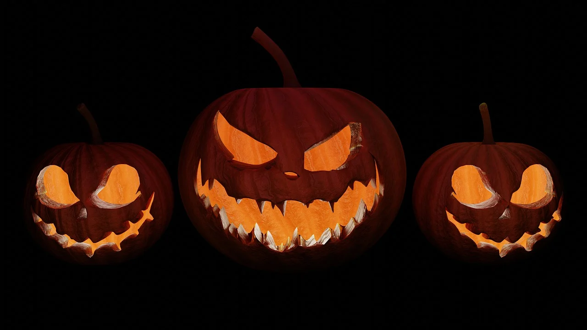
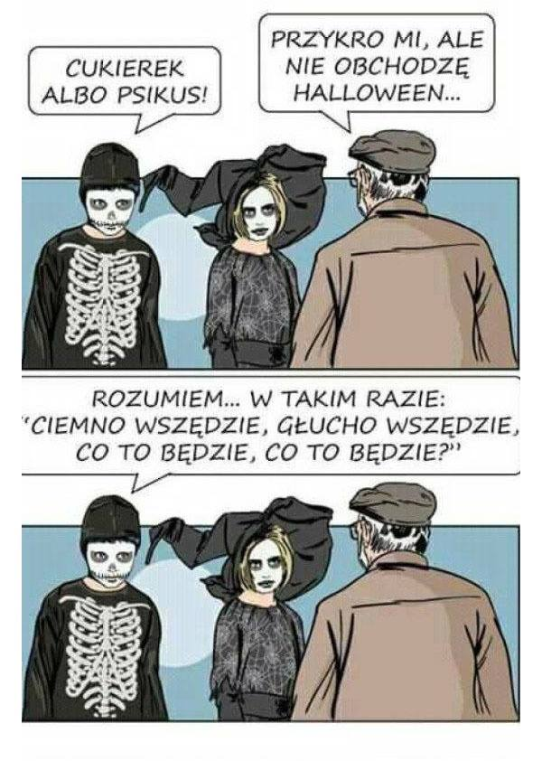

Znajdziesz tutaj informacje na temat pochodzenia, tradycji i historii tego niesamowitego święta.
Halloween, znane także jako All Hallows' Eve, ma swoje korzenie w celtyckim święcie Samhain. To święto obchodzone było na przełomie października i listopada, jako czas, w którym świat żywych i duchów łączyły się.
Tradycje Halloween obejmują przebieranie się w straszne kostiumy, wycinanie dyni (jack-o'-lanterns), nawiedzanie domów w poszukiwaniu słodyczy (tzw. "Dolce, dolce!"), oraz straszne dekoracje.
Halloween ma długą historię, sięgającą setki lat. Z czasem stało się popularne na całym świecie, zwłaszcza w Stanach Zjednoczonych. Rozwinęło się w święto straszenia i zabawy.
